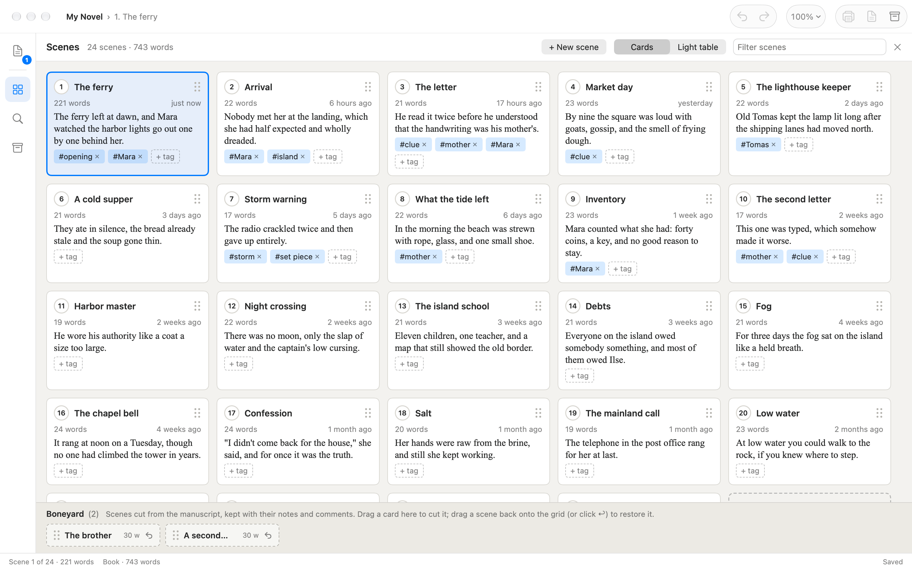
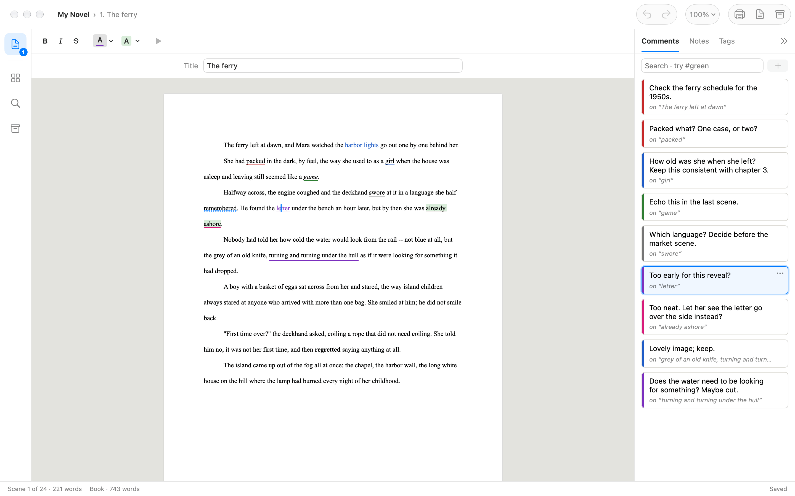
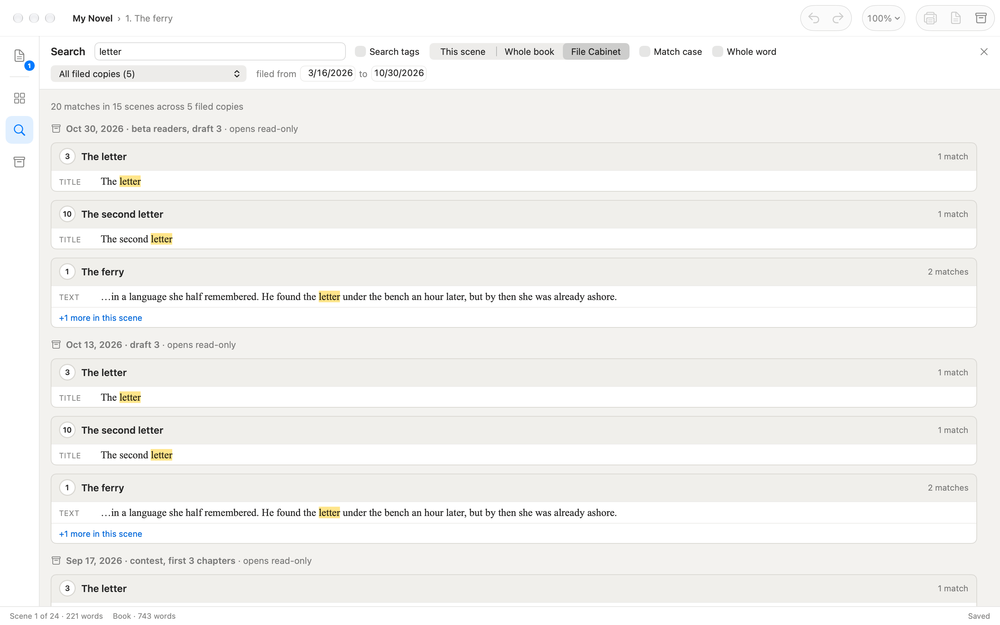
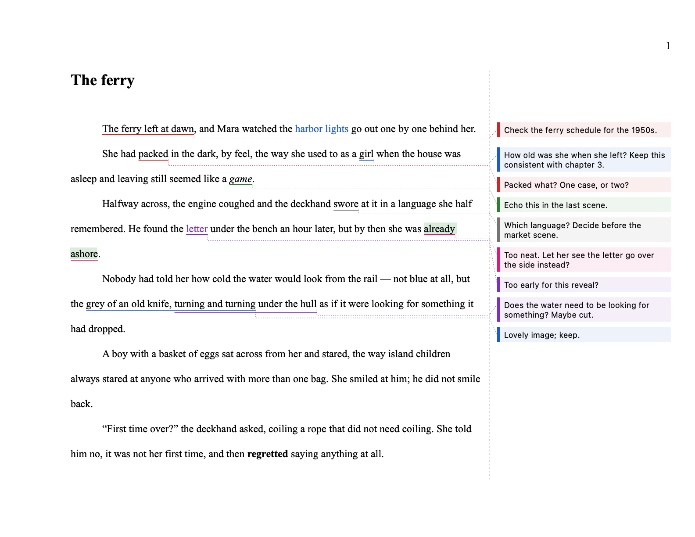
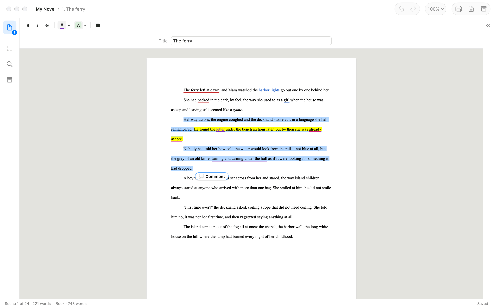

Write it scene by scene
Your book is an ordered list of scenes, each on a manuscript page in Times New Roman, double-spaced. The Scenes sheet lays them out as cards: drag one to reorder the story, tag it, or start a new scene with its title.
Drag a scene you’ve cut onto the Boneyard. It keeps its words, notes and comments, and you can drag it back whenever you change your mind.

Comments in color
Select some words and click Comment. The words are underlined in the comment’s color, and where comments overlap their underlines stack, so none is hidden.
Click an underline to find its comment, or a comment to find its words. Search your comments by word, by color, or both: #red ferry.

File a copy, find it again
File a Copy keeps a dated, tagged copy of the whole book in the File Cabinet, and its text never changes. Open any copy to read the book as it was then, and bring a scene from it back into your book.
Search looks through every filed copy at once, so the line you cut three drafts ago is still a search away.

Print it, or send it to Word
Print a scene or the whole manuscript in manuscript format. Or print it with your comments in a column beside the text, each one beside the line it’s about, joined to its words by a line.
Export to Word saves a scene as a Word document. Tick Include comments, and your comments arrive as Word comments in the margin, ready for an editor to answer.

Hear it read aloud
Select a passage and press Play (▶). Your Mac reads it aloud in its own voice and highlights each sentence as it goes, so you hear the rhythm your eye skims past.

Your words are safe
-
Made with AI’s help, with no AI of its own
Scene It was written with the help of AI coding tools (Claude, from Anthropic). The app itself has no AI of its own and never gives what you write to an AI service: Scene It never sends your words anywhere. Apple’s Writing Tools and text predictions are switched off inside it. Spell checking and reading aloud come from macOS and run on your Mac; Apple may use on-device models for them, and nothing leaves your Mac. Scene It never needs an internet connection.
-
Saved as you write
Scene It saves two seconds after you stop typing, at least every thirty seconds while you type, and whenever you switch scenes or quit. Every save is checked by reading it back in before it’s written, then swapped in whole, so the last good version is never half-overwritten.
-
Backups at every scale
Inside the book, Scene It keeps the three versions before the current one. As you save, it also takes snapshots and keeps at most one per ten minutes for the last day, one per day for a month, and one per week after that. They’re copied outside the book too, in case the book itself is lost.
-
Plain text you can open anywhere
Your book is a
.sceneitpackage, which Finder shows as one document. Choose Show Package Contents and you’ll find the whole book in one Markdown text file,book.md, that any text editor can read, today or in twenty years. -
No scene is thrown away
Cut scenes wait in the Boneyard. Even a scene you delete for good stays in the book’s file, out of sight, and a filed copy’s text never changes.
-
Nothing leaves your Mac
No account, no cloud, no tracking. Read aloud uses your Mac’s own voices. If something goes wrong, Report a Problem drafts an email for you to send, and it never includes your writing.